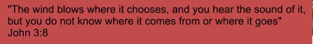

© GKH Software 2020
Gaining New Engineering Perspective
Software shouldn’t have a steep learning-curve any more. Engineering students have all more-less been taught the
basic way to solve a problem. Once we leave college, why do experienced individuals use software with
completely new learning paradyms?
1.
Moving the data from one source into the analysis software is not possible.
2.
Characterizing data is a manual process.
3.
Software doesn’t use the process that is used in college.
4.
Academics have not synchronized the classroom teaching with their research process. Research solves a a
problem in the most expedient way, it does not optimize the ways to learn about it.

What is the big goal?
The big goal is to create models that mimic what’s used in college.
Many times the model is just a source, impedance, load model.
This is the simplified form of much work of combining many
impedances.
Substations:
Wire sizing for transients
Wire must be sized to take transients
to ground while keeping eliminating
unsafe potentials. These wires are
connected to any steel/metal within a
substation. Potential is short for
potential difference or voltage.
Equipment and people must be
protected from unintended circuits
created by random injected energy
such as lightning or broken
equipment/conductors that fault.
Wire models can be either high- or low-
frequency. External energy, energy stored
in an electromagnetic field, or mechanical
devices cause the high frequency or
overcurrent transients. Low frequency
models are employed as steady state with
subsynchronous multipliers.
Model Standardization
Modeling software is typically created
on it’s own island. You must create
your models from scratch unless you
hire a consultant to create a tool to
move data into it. Ubiquitous models
would be incredibily helpful.
Fortunately, the container has already
been created. It is called a
Functional
Mock-up Interface
specification. Over
150 software tools can use the
specification’s Functional Mock-up
Unit (FMU) within their models.
Unfortunately, Spice does not support
FMU’s.
Ray Bradbury, Zen in the Art of Writing
“Every morning I jump out of bed and step on a landmine. The landmine is
me. After the explosion, I spend the rest of the day putting the pieces
together.”
